A software developer currently working towards a Computer Science degree at Northeastern University
Has experience building complex (and fun) projects using Java, C++, Python, and more
An eager learner, thrives in a team environment, receptive to feedback, and keenly adaptable
Self-starter attitude, with practiced communicative and collabrative skills
Looking for a full-time role to gain hands-on experience and knowledge
Loves the process of problem solving, from studying to implementing solutions
I also like photography! (visuals on site sourced by me :) )
02
Projects
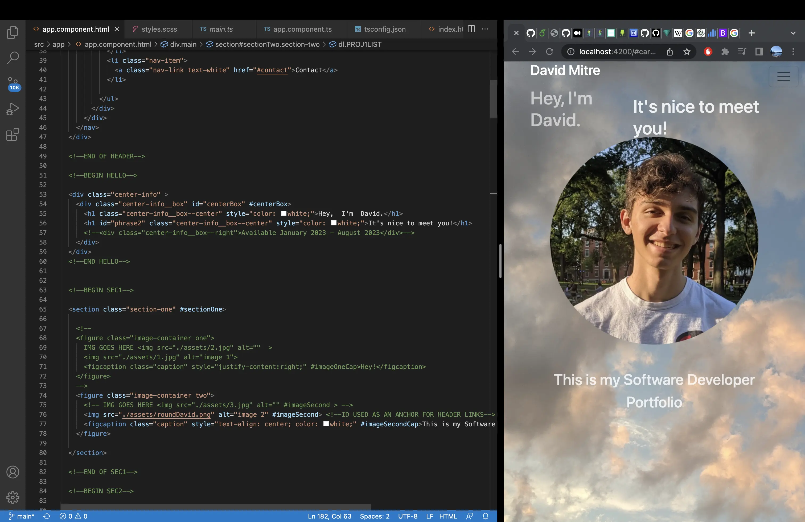
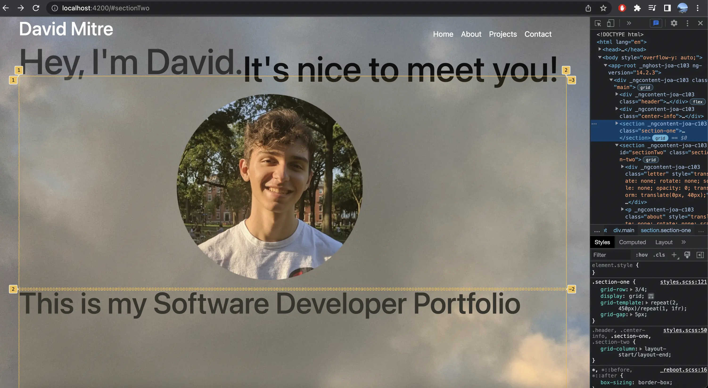
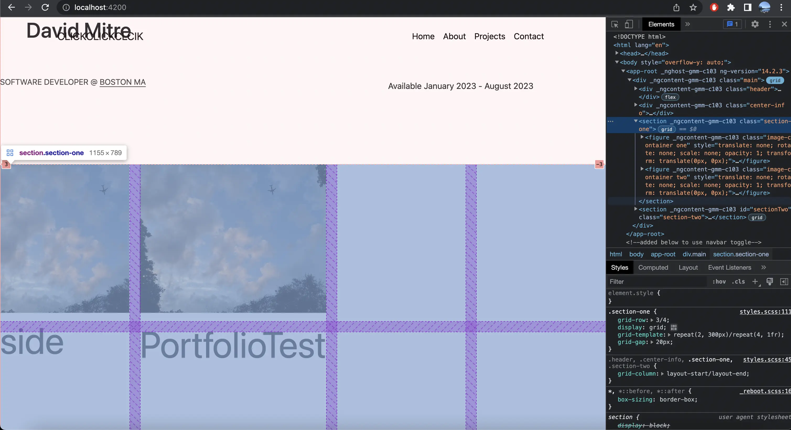
Personal Portfolio Website
Description
-Made fully from scratch using Angular, Bootstrap 5, and GSAP for effects. Mobile-compatible and Reactive.
Obstacles
-Self-set time constraints, milestones, and project specifications, including: 'talking' introduction, animated transitions.
-Maintaining website quality while developing a reactive website accessible by mobile and desktop.
Solutions
-Compartmentalized project successfully into three distinct goals: a base of knowledge, a minimum viable product, and expressive additions.
-Using this, able to hit 100% of milestone goals, paced well enough to facilitate constant learning and adaptation.
Image Editing Software
Description
-Working Image Editor made with Java, Gui using Java swing library, team programming project.
Obstacles
-Navigating tough deadlines for lofty specifications such as implementing Gaussian blur, and Image Histograms.
Solutions
-Using leadership skills and good team practice to work towards a common goal of creating a solid final product.
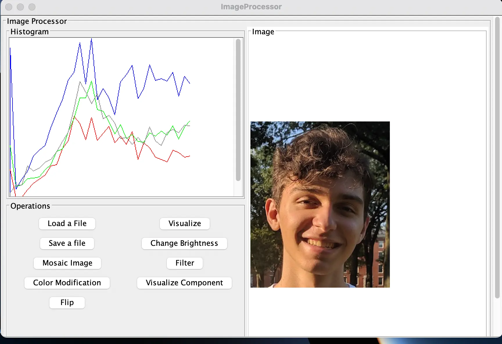
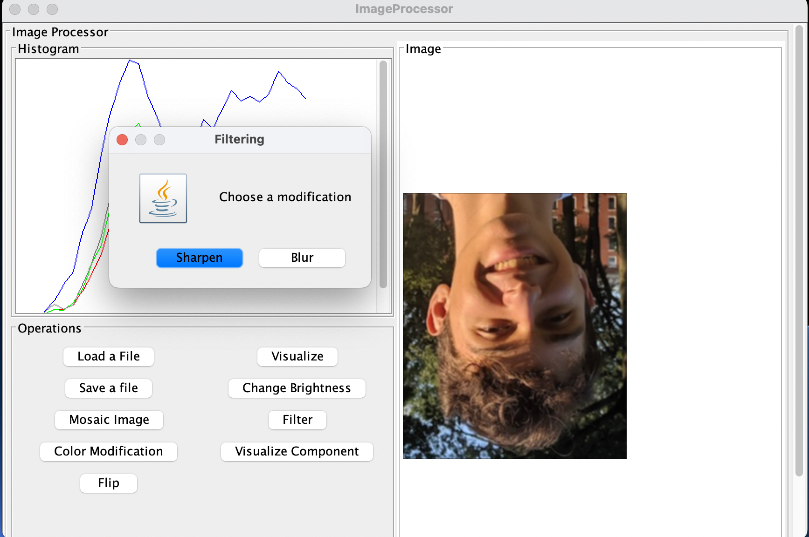
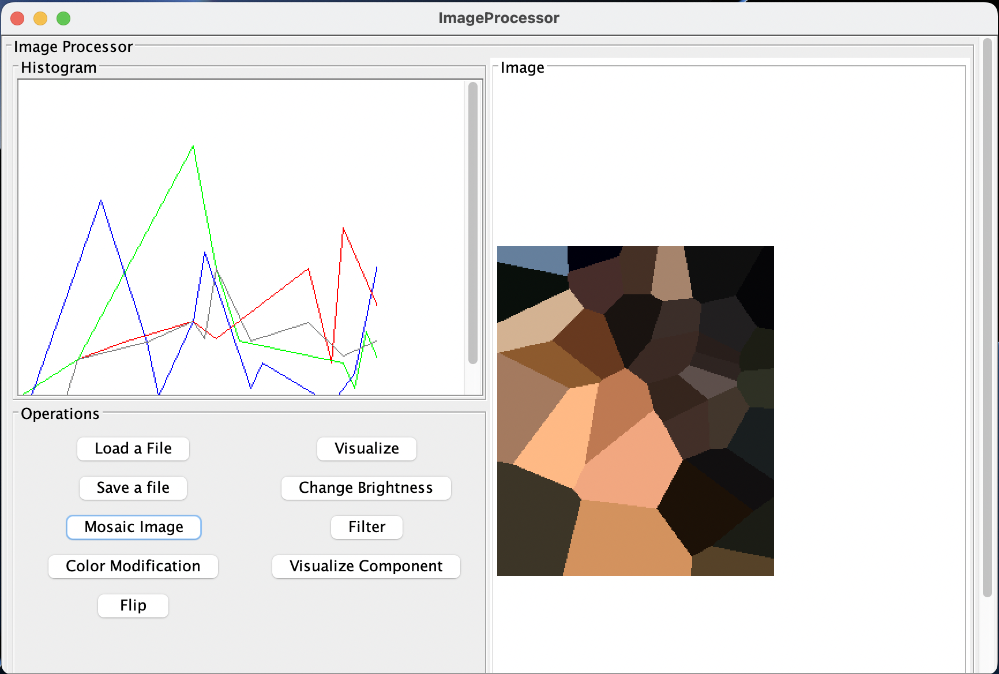
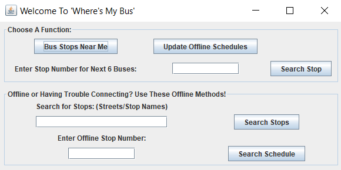
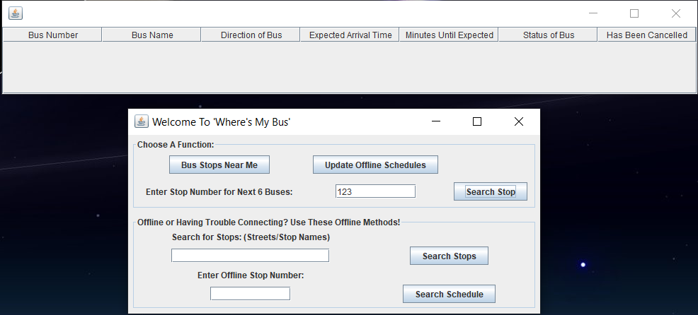
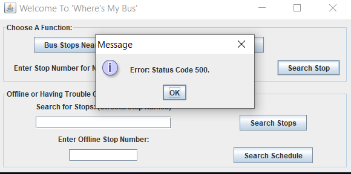
Location Based Bus Tracking
Description
-Java program using a public transit API and Swing Gui to allow users to determine transit times, delays, and more.
Obstacles
-Development of location based portion obstructed by Java having no access to Windows device's local location through Java libraries.
Solutions
-Used Java Native Access to call C# code that implemented location-based element of project.
SQL Student Database
Description
-A database management application dealing with students, courses, professors, and their interactions.
Obstacles
-Enforcing data integrity, encapsulation of functionality, data sanitizing.
Solutions
-Model, View, Controller architecture to help structure project.
-Using prepared statements to avoid SQL injection.
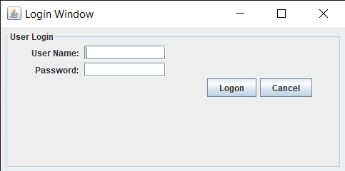
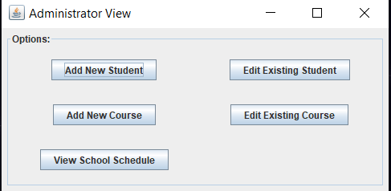
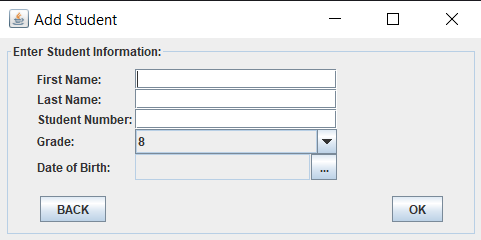
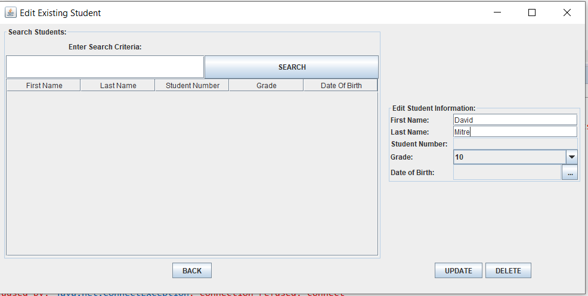
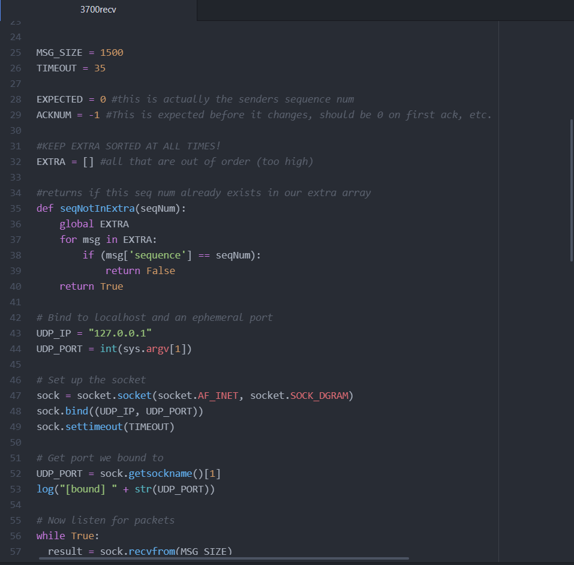
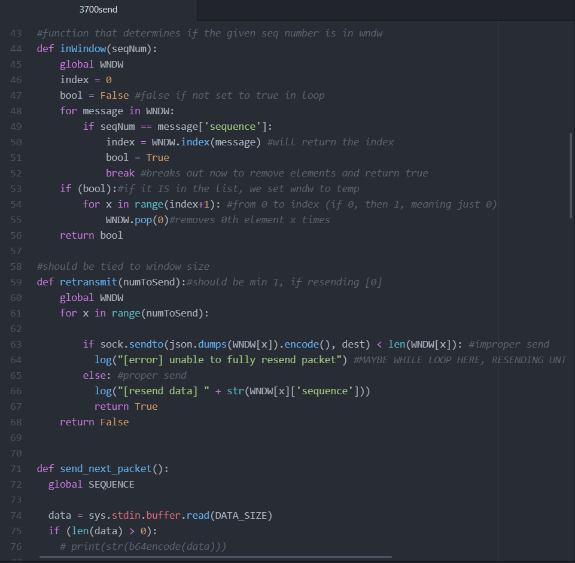
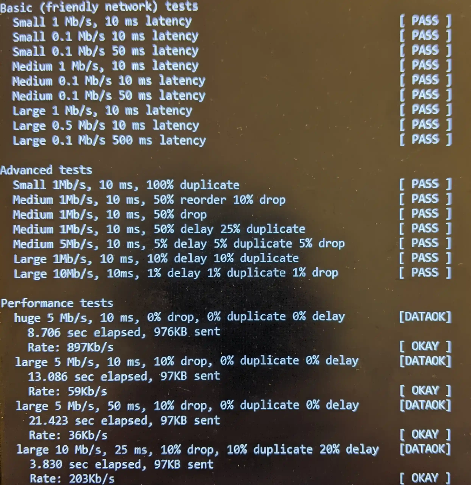
Transport Protocol built on UDP
Description
-A TCP-like protocol, server and client, designed for durability against dropped, reordered, duplicate, and slowed packets.
Obstacles
-Designing a protocol with UDP as base, and maintain reliability.
-Building a protocol that is fast, while maintaining low data volume to be exchanged over the network, such as retransmissions.
Solutions
-Focused on correctness first, optimizing second: Used acknowledgment numbers, and an expanding window of unacknowledged messages, similar to TCP's 'slow start'.
-Successfully handled sending data at 10Mb/s to 0.1Mb/s and lossy networks with up to 50% dropped packets, 500ms latency, 100% duplicated packets, and lesser combinations.
Logistic Regression AI Model: NBA
Description
-A team project looking to predict NBA basketball games outcomes, with betting odds in mind.
Obstacles
-Creating a model that doesn't 'overfit' data is important: choosing covariant data to base the model off of (for example rebounds and offensive rebounds) causes over-correction leading to less accuracy in the long-run.
Solutions
-Built covariance matrices to minimize overfitting, and tested data on past regular seasons.
-Our model performed at about 66% for regular season outcomes, just about at the upper-bound of other successful AI models, which Weiner, Josh et al. describe as 66-74%.
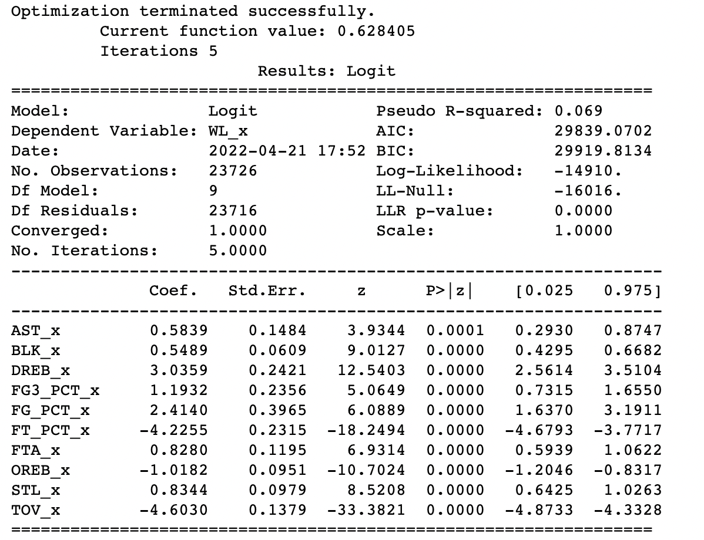
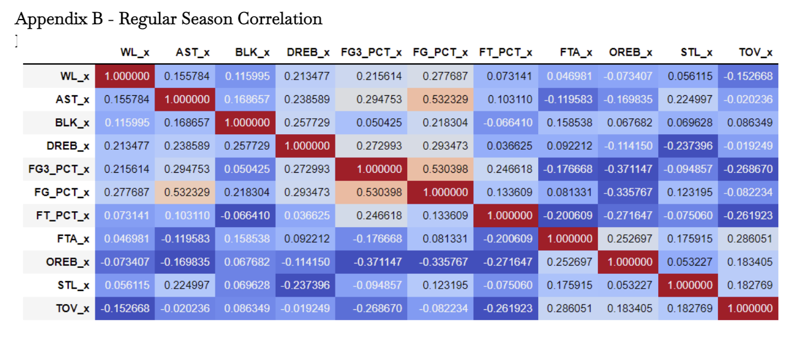
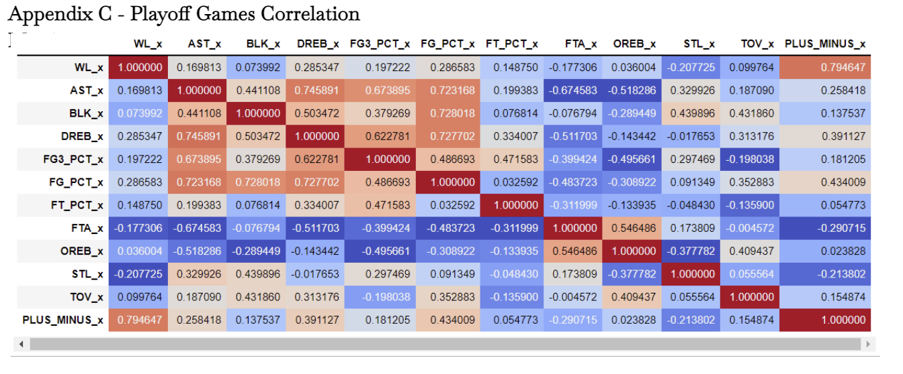
...And more! Feel free to contact me about my other projects: